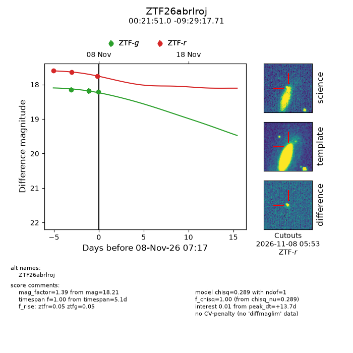
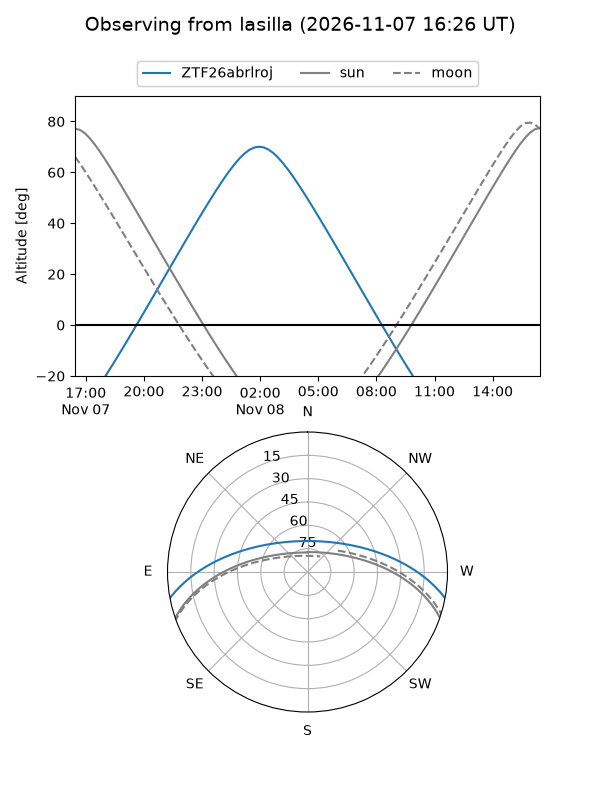
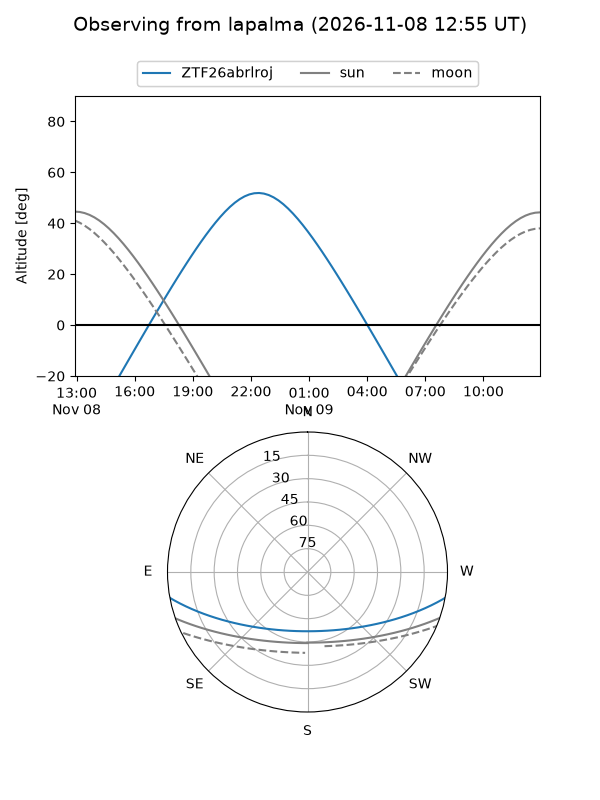
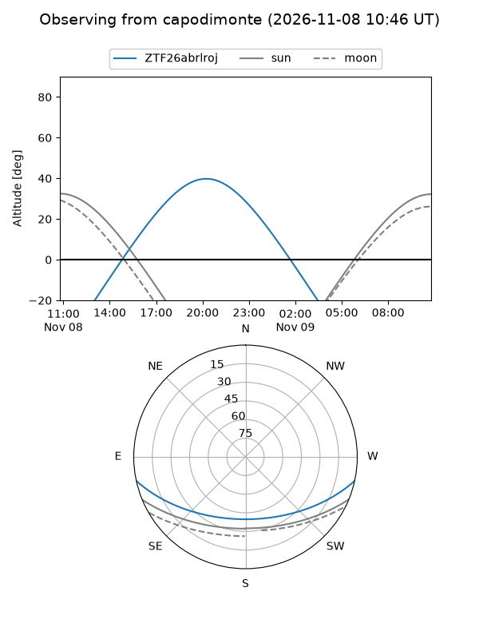
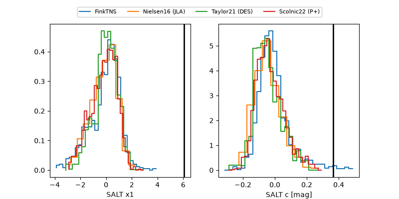

ZTF26abrlroj
Target ZTF26abrlroj at 2026-11-08 07:19
Aliases and brokers:
FINK-ZTF: ztf.fink-portal.org/ZTF26abrlroj
Lasair-ZTF: lasair-ztf.lsst.ac.uk/objects/ZTF26abrlroj
ALeRCE-ZTF: alerce.online/object/ZTF26abrlroj
Direct TNS query: direct search
alt names
ZTF26abrlroj (ztf,fink_ztf)
Coordinates:
equatorial (ra, dec) = 5.4624,-9.48825
equatorial (HMS+DMS) = 00:21:50.98,-09:29:17.71
galactic (l, b) = (99.9414,-71.02737)
Flags:
peak dt: +13.7
Photometry:
last ztfg=18.21, ztfr=17.75
3 ztfg, 3 ztfr detections
Lightcurve

Visibility



Additional plots
